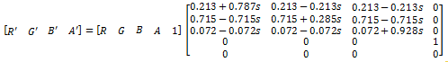

title: Saturation effect description: Use this effect to alter the saturation of an image. ms.assetid: 03A374D9-BED4-49ED-B90E-21193909C8AB keywords:
Use this effect to alter the saturation of an image. The saturation effect is a specialization of the color matrix effect.
The CLSID for this effect is CLSID_D2D1Saturation.
The example here shows the input and output images of the saturation effect with a saturation of 0%.
| Before |
|---|
|
| After |
ComPtr<ID2D1Effect> saturationEffect;
m_d2dContext->CreateEffect(CLSID_D2D1Saturation, &saturationEffect);
saturationEffect->SetInput(0, bitmap);
saturationEffect->SetValue(D2D1_SATURATION_PROP_SATURATION, 0.0f);
m_d2dContext->BeginDraw();
m_d2dContext->DrawImage(saturationEffect.Get());
m_d2dContext->EndDraw();
The effect calculates a color matrix based on the saturation value (s in the equation here) you specify with the D2D1_SATURATION_PROP_SATURATION property. The matrix equation is shown here.

The matrix created depends only on the saturation value. You can use the color matrix effect if you need a specific matrix.
This effect consumes and outputs premultiplied alpha images. The effect won't work on straight alpha images unless they are fully opaque.
| Display name and index enumeration | Type and default value | Description |
|---|---|---|
| Saturation D2D1_SATURATION_PROP_SATURATION | FLOAT 0.5f | The saturation of the image. You can set the saturation to a value between 0 and 1. If you set it to 1 the output image is fully saturated. If you set it to 0 the output image is monochrome. The saturation value is unitless. |
| Requirement | Value |
|---|---|
| Minimum supported client | Windows 8 and Platform Update for Windows 7 [desktop apps | Windows Store apps] |
| Minimum supported server | Windows 8 and Platform Update for Windows 7 [desktop apps | Windows Store apps] |
| Header | d2d1effects.h |
| Library | d2d1.lib, dxguid.lib |